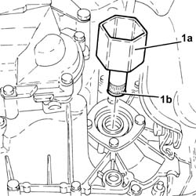

2110D74 differential l/h inner drive shaft - r + r
- Path
- Procedures > 21 GEARBOX UNIT > 2110 MANUAL GEARBOX WITH DIFFERENTIAL > 2110D MANUAL GEARBOX DIFFERENTIAL > 2110D74 differential l/h inner drive shaft - r + r
- Kind
- repair procedure (removal / refitting; the operation number is the code)
- Applies to
- all engines; all production periods
- Interactive page
- https://sloeber94.github.io/elrnDB-fDbl/en/#/2584592
Applies to: all engines; all production periods
 Removing
Removing
 Refitting
Refitting1. Remove the left differential internal driveshaft (1a) complete with circlip (1b).

Applies to: all engines; all production periods
Refitting
RemovingPlace the left differential internal driveshaft back in its housing complete with a new circlip.